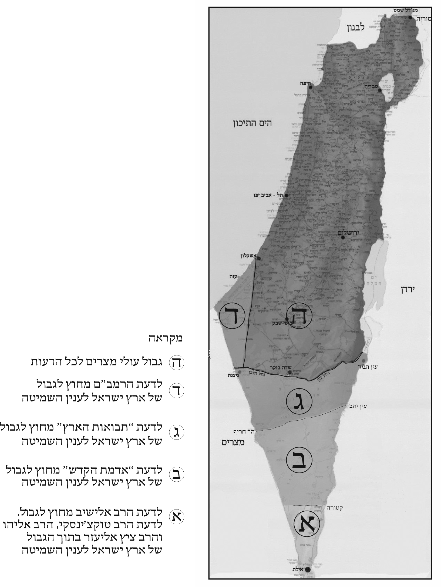

נספח כה: השיטות השונות לגבי הגבול הדרומי של הארץ לענייני השמיטה

לענין גבולות הארץ ישנן כמה דעות בפוסקי ההלכה, במפה המצורפת סומנו הדעות השונות בענין זה. להרחבה ראה כאן בספרנו פרק א הערות צ', צ"א וצ"ה ופרק י"ז הערה י"ד.
הגבולות לפי הבנת רבני "מכון התורה והארץ", וניתנו לנו באדיבותם